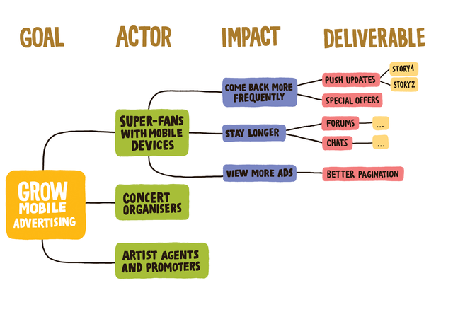
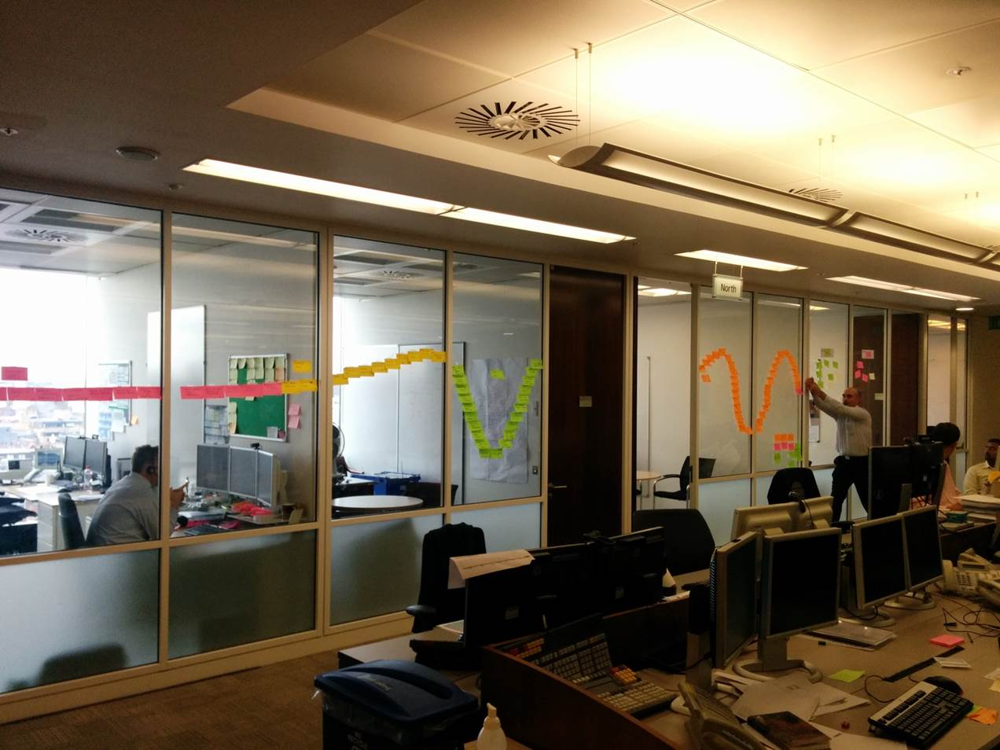
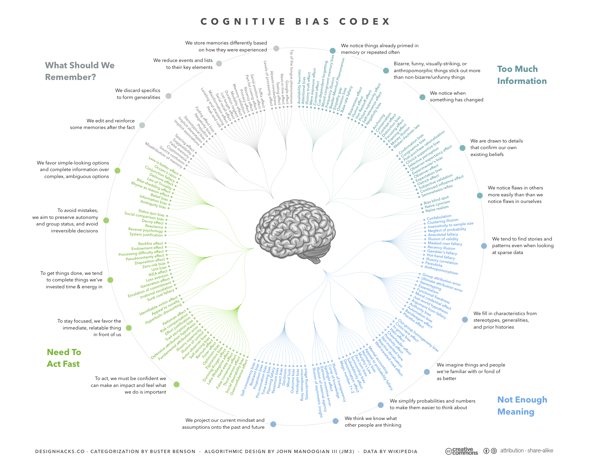

- The Transformation
- Culture
- Strategies
Hi, I'm Joe Schmetzer
How to expanding the practices, princples and values that you care about?
The Lean/Agile Transformation
Transformation context
Transformation vision
Assembling the coaching team
Setting the transformation goals
Too many cooks
Not enough cooks
Stop distracting everyone
Time to leave...
Change is hard
What is Culture?
Whatever people learn from other people, and transmit to other people, especially by interacting with them
The 4 Forces of Culture
1. Intertial Force
2. Entropic Force
3. Reflective (Metacultural) Force
4. The Force of Interest
Forces of Cultural Change
The Secret to Successful Culture Change
the new culture must appear to grow organically out of the old culture
"Culture eats strategy for lunch"
— Peter Drucker

Scenario: New Company
Scenario: Big Company, Bottom Up Change
Community Alignment
Reframing
Technical Practices are Business Concerns
- Clean Code: maintain pace into the future, optionality
- Continuous Integration: reducing risk
- Continuous Delivery: reducing risk
Business Alignment
Impact Mapping
Roadmaps
Lean and Systems Thinking
Example Value Stream
Learning
Elevate learning to the highest level goal of the company
Communication
You need to get better at communication
List of Cognitive Biases
Avoiding Bias
- Clean Language
- Non-Violent Communication
- 8 Behaiours for Smarter Teams
Fearless Change
Summary
- Alignment of Cultural Forces
- Learning Strategies
- Communication Strategies
Fin
Questions?
Image Credits
- The Great Wave off Kanagawa, By Katsushika Hokusai - Metropolitan Museum of Art, online database: entry 45434, Public Domain, https://commons.wikimedia.org/w/index.php?curid=2798407
- Cognitive Bias Codex, By Jm3 - Own work, CC BY-SA 4.0, https://commons.wikimedia.org/w/index.php?curid=57942404
- Impact Mapping, by Gojko Adzic http://www.impactmapping.org/